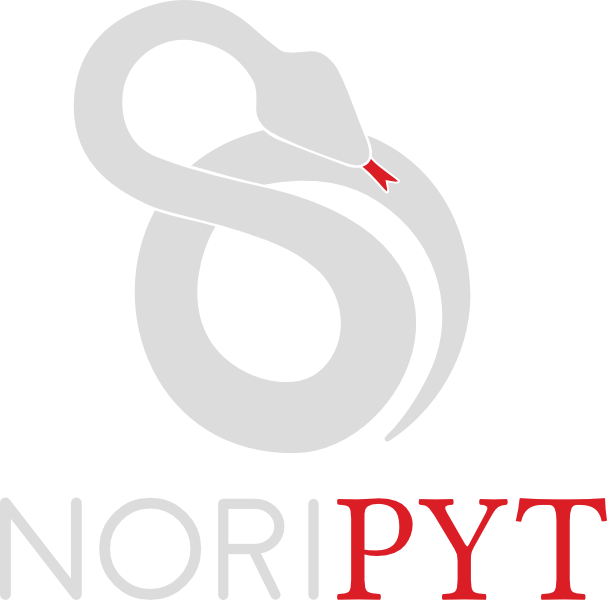

Tiny web agency
Come, discuss, we’ll build what you’re dreaming of.
Who we are
Bertrand
Bordage
Developer – Typographer
Julie
Graine
Project manager – Archivist
Musicians
Baroque
Modern
Where we are
Seine Innopolis
72 rue de la République
76140
Le Petit-Quevilly
–
France
contact@noripyt.com